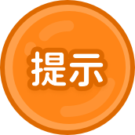

<!DOCTYPE html>
<html lang="en">
  <head>
    <meta charset="UTF-8" />
    <meta http-equiv="X-UA-Compatible" content="IE=edge" />
    <meta
      name="viewport"
      content="width=device-width, user-scalable=no,initial-scale=1.0, maximum-scale=1.0, mininum-scale=1.0"
    />
    <link rel="stylesheet" href="../css/common.css" />
    <link rel="stylesheet" href="../css/animate.min.css" />
    <title>page7</title>
  </head>
  <body>
    <style>
      body {
        margin: 0;
        padding: 0;
        display: flex;
        justify-content: center;
        align-items: center;
        height: 100vh;
      }
      #box {
        position: relative;
        width: calc(100vh * 16 / 9);
        height: 100vh;
        max-height: 100%;
        /* background-color: #ccc; */
        display: flex;
        justify-content: center;
        align-items: center;
        text-align: center;
        font-size: 24px;
        background: url("../images/scene5.png");
        background-size: contain;
      }
      .btn {
        transition: transform 0.1s;
      }
      .btn:hover {
        transform: scale(1.1);
      }
      img {
        position: absolute;
        cursor: pointer;
      }
      .hei {
        position: fixed;
        z-index: 999;
        top: 0;
        left: 0;
        right: 0;
        bottom: 0;
        background-color: rgb(0, 0, 0);
      }
      .hb {
        width: 35.7%;
        height: 49.2%;
        left: 9.4%;
        top: 31%;
        position: absolute;
        z-index: 2;
      }
    </style>
    <!-- 黑幕 -->
    <div class="hei"></div>
    <div id="box">
      <!-- 返回 -->
      
      <!-- 提醒 -->
      <!--  -->
      <!-- 重玩 -->
      <!--  -->
      <!-- 语音 -->
      
      <!-- 上一页 -->
      
      <!-- 下一页 -->
      
      <!--  -->
      <div class="hb"></div>
      <canvas
        id="canvas"
        style="
          position: absolute;
          width: 35.7%;
          height: 49.2%;
          left: 9.4%;
          top: 31%;

          z-index: 5;
        "
      ></canvas>
      <!-- 撤销 -->
      
      <!-- 答案 -->
      

      <!-- 拼音 -->
      <div>
        
      </div>

      <!-- 图案 -->
      <div>
        
        
        
        
      </div>
      <!-- 左侧箭头 -->
      
      <!-- 右侧箭头 -->
      
    </div>
    <script src="../js/jquery-1.12.3.js"></script>
    <!-- <script type="text/javascript" src="../js/handingWrite.js"></script> -->
    <script>
      function resizeBox() {
        var box = document.getElementById("box");
        var width = window.innerWidth; // 获取窗口宽度
        var height = window.innerHeight; // 获取窗口高度
        // 计算盒子的高度
        var boxHeight = Math.min(height, (width / 16) * 9); // 高度最多为100%
        // 设置盒子的样式
        box.style.height = boxHeight + "px";
      }
      // 初始化时调整盒子大小
      resizeBox();
      // 监听窗口大小改变事件
      window.addEventListener("resize", function () {
        resizeBox();
      });
    </script>
    <script>
      function pre() {
        new Audio("../mp3/pages.mp3").play();
        $(".hei").fadeIn(500); // 2000毫秒为过渡效果持续时间
        setTimeout(() => {
          window.location.href = "./page6.html";
        }, 500);
      }
      function next() {
        new Audio("../mp3/pages.mp3").play();
        $(".hei").fadeIn(500); // 2000毫秒为过渡效果持续时间
        setTimeout(() => {
          window.location.href = "./page8.html";
        }, 500);
      }
    </script>
    <script>
      var audio = new Audio("../mp3/P5-1.mp3");
      var isPlaying = false;
      function playMp3() {
        if (!isPlaying) {
          isPlaying = true;
          audio.play();
          audio.onended = function () {
            isPlaying = false;
          };
        }
      }
    </script>

    <script>
      // 语音按钮
      const imgElement = document.querySelector(".btn.yuyin");
      imgElement.addEventListener("mousedown", function (event) {
        // 更改图片元素的src属性
        imgElement.src = "../images/axyy.png";
      });
      imgElement.addEventListener("mouseup", function (event) {
        imgElement.src = "../images/yuyin@2x.png";
      });
      imgElement.addEventListener("mouseleave", function (event) {
        //console.log("鼠标离开");
        imgElement.src = "../images/yuyin@2x.png";
      });

      // 上一页按钮
      const imgElement2 = document.querySelector(".btn.shangyiye");
      imgElement2.addEventListener("mousedown", function (event) {
        // 更改图片元素的src属性
        imgElement2.src = "../images/As.png";
      });
      imgElement2.addEventListener("mouseup", function (event) {
        imgElement2.src = "../images/syy.png";
      });
      imgElement2.addEventListener("mouseleave", function (event) {
        //console.log("鼠标离开");
        imgElement2.src = "../images/syy.png";
      });

      // 下一页按钮
      const imgElement3 = document.querySelector(".btn.xiayiye");
      imgElement3.addEventListener("mousedown", function (event) {
        // 更改图片元素的src属性
        imgElement3.src = "../images/Ax.png";
      });
      imgElement3.addEventListener("mouseup", function (event) {
        imgElement3.src = "../images/nextPage.png";
      });
      imgElement3.addEventListener("mouseleave", function (event) {
        imgElement3.src = "../images/nextPage.png";
      });

      //   重玩按钮;
      // const imgElement4 = document.querySelector(".btn.chongwan");
      // imgElement4.addEventListener("mousedown", function (event) {
      //   // 更改图片元素的src属性
      //   imgElement4.src = "../images/axcw.png";
      // });
      // imgElement4.addEventListener("mouseup", function (event) {
      //   imgElement4.src = "../images/cwBtn.png";
      // });
      // imgElement3.addEventListener("mouseleave", function (event) {
      //   imgElement4.src = "../images/cwBtn.png";
      // });

      //   $("#clear_btn").mousedown(function (event) {
      //
      //     // 更改图片元素的src属性
      //     $(this).attr("src", "../images/axcw.png");
      //   });

      //   $("#clear_btn").mouseup(function (event) {
      //
      //     $(this).attr("src", "../images/cwBtn.png");
      //   });

      //   $("#clear_btn").mouseleave(function (event) {
      //     //console.log("鼠标离开");
      //     $(this).attr("src", "../images/cwBtn.png");
      //   });
    </script>
    <script>
      // 在页面加载完成后执行
      $(document).ready(function () {
        // 设置一个延时，以便看到渐变过渡效果
        setTimeout(function () {
          $(".hei").fadeOut(500, function () {
            // 渐变过渡结束后隐藏盒子
            $(this).hide();
          });
        }, 0);
      });
    </script>
    <script>
      function ret() {
        $(".hei").fadeIn(500); // 2000毫秒为过渡效果持续时间
        setTimeout(() => {
          window.location.href = "../../../../../page2.html";
        }, 500);
      }
    </script>
    <!-- 画板 -->
    <script>
      setTimeout(() => {
        hb();
      }, 1000);
      function hb() {
        var canvas = document.getElementById("canvas");
        var canvasWidth = document.querySelector(".hb").offsetWidth;
        var canvasHeight = document.querySelector(".hb").offsetHeight;

        var cxt = canvas.getContext("2d");
        canvas.width = canvasWidth;
        canvas.height = canvasHeight;
        $("#canvas").css("width", canvasWidth + "px");
        $("#canvas").css("height", canvasHeight + "px");
        var isMouseDown = false;
        var lastLoc = { x: 0, y: 0 }; //起笔坐标
        var lastTime = 0; //用于计算时间
        var lastLineWidth = -1;
        var lineColor = "#000000";
        paths = []; // 存储绘制的路径
        colors = []; // 存储绘制的颜色
        drawGrid(cxt);
        // 鼠标按下
        function beginStroke(point) {
          isMouseDown = true;
          lastLoc = windowToCanvas(point.x, point.y);
          lastTime = new Date().getTime();
          paths.push([]); // 创建新的路径数组
          paths[paths.length - 1].push(lastLoc); // 将起点坐标加入当前路径
          colors.push(lineColor); // 存储绘制的颜色
        }
        // 鼠标结束
        function endStroke() {
          // console.log("color",lineColor);
          isMouseDown = false;
        }
        // 鼠标移动
        function moveStroke(point) {
          // $("#cx_btn").fadeIn();

          var curLoc = windowToCanvas(point.x, point.y);
          var curTime = new Date().getTime();
          var s = calcDistance(curLoc, lastLoc); // 获取笔锋经过的距离
          var t = curTime - lastTime; // 获取笔锋经过的时间 ，用于计算行笔速度，赋值不同的宽度
          var lineWidth = calcLineWidth(t, s);
          cxt.beginPath();
          cxt.moveTo(lastLoc.x, lastLoc.y);
          cxt.lineTo(curLoc.x, curLoc.y);
          cxt.strokeStyle = lineColor;
          cxt.lineWidth = lineWidth;
          cxt.lineCap = "round";
          cxt.lineJoin = "round";
          cxt.stroke();
          cxt.closePath();
          lastLoc = curLoc;
          lastTime = curTime;
          lastLineWidth = lineWidth;
          paths[paths.length - 1].push(curLoc); // 将当前点加入当前路径
        }
        canvas.onmousedown = function (e) {
          e.preventDefault();
          beginStroke({ x: e.clientX, y: e.clientY });
        };
        canvas.onmouseup = function (e) {
          endStroke();
          e.preventDefault();
        };
        canvas.onmouseout = function (e) {
          endStroke();
          e.preventDefault();
        };
        canvas.onmousemove = function (e) {
          e.preventDefault();
          if (isMouseDown) {
            moveStroke({ x: e.clientX, y: e.clientY });
          }
        };
        // 触屏事件
        canvas.addEventListener("touchstart", function (e) {
          e.preventDefault();
          var touch = e.touches[0];
          beginStroke({ x: touch.pageX, y: touch.pageY });
        });
        canvas.addEventListener("touchmove", function (e) {
          e.preventDefault();
          if (isMouseDown) {
            var touch = e.touches[0];
            moveStroke({ x: touch.pageX, y: touch.pageY });
          }
        });
        canvas.addEventListener("touchend", function (e) {
          e.preventDefault();
          endStroke();
        });
        // }
        var maxLineWidth = 3;
        var minLineWidth = 3;
        var maxStrokeV = 10;
        var minStrokeV = 0.1;
        function calcLineWidth(t, s) {
          // 计算运笔速度和时间，获取不同得到宽度
          var resultLineWidth = 0;
          var v = s / t;
          if (v <= minStrokeV) {
            resultLineWidth = maxLineWidth;
          } else if (v >= maxStrokeV) {
            resultLineWidth = minLineWidth;
          } else {
            resultLineWidth =
              maxLineWidth -
              ((v - minStrokeV) / (maxStrokeV - minStrokeV)) *
                (maxLineWidth - minLineWidth);
          }
          if (lastLineWidth == -1) {
            return resultLineWidth;
          }
          return (lastLineWidth * 2) / 3 + (resultLineWidth * 1) / 3;
        }
        function calcDistance(loc1, loc2) {
          return Math.sqrt(
            (loc1.x - loc2.x) * (loc1.x - loc2.x) +
              (loc1.y - loc2.y) * (loc1.y - loc2.y)
          );
        }
        function windowToCanvas(x, y) {
          var box = canvas.getBoundingClientRect();
          return { x: x - box.left, y: y - box.top };
        }
        function drawGrid(cxt) {
          cxt.save();
          cxt.beginPath();
          // cxt.moveTo(3, 3);
          // cxt.lineTo(canvas.width - 3, 3);
          // cxt.lineTo(canvas.width - 3, canvas.height - 3);
          // cxt.lineTo(3, canvas.height - 3);
          // cxt.lineTo(3, 3);
          // cxt.lineWidth = 6;
          // cxt.strokeStyle = "red";
          // cxt.closePath();
          // cxt.stroke();
          // cxt.restore();
          // cxt.save();
          // cxt.beginPath();
          // cxt.moveTo(3, 3);
          // cxt.lineTo(canvas.width, canvas.height);
          // cxt.moveTo(canvas.width, 3);
          // cxt.lineTo(3, canvas.height);
          // cxt.moveTo(canvas.width / 2, 3);
          // cxt.lineTo(canvas.width / 2, canvas.height);
          // cxt.moveTo(3, canvas.height / 2);
          // cxt.lineTo(canvas.width, canvas.height / 2);
          // cxt.strokeStyle = "red";
          cxt.lineWidth = 1;
          cxt.stroke();
          cxt.closePath();
          cxt.restore();
        }
        // 撤回
        $("#cx_btn").click(function (e) {
          if (paths.length > 0) {
            paths.pop(); // 删除最后一个路径
            colors.pop(); // 删除最后一个颜色
            cxt.clearRect(0, 0, canvas.width, canvas.height);
            drawGrid(cxt);
            // 重新绘制剩余的路径
            for (var i = 0; i < paths.length; i++) {
              var path = paths[i];
              for (var j = 0; j < path.length - 1; j++) {
                cxt.beginPath();
                cxt.moveTo(path[j].x, path[j].y);
                cxt.lineTo(path[j + 1].x, path[j + 1].y);
                cxt.strokeStyle = colors[i];
                cxt.lineWidth = lastLineWidth;
                cxt.lineCap = "round";
                cxt.lineJoin = "round";
                cxt.stroke();
                cxt.closePath();
              }
            }
          }
          if (paths.length == 0) {
            // $("#cx_btn").fadeOut();
          }
        });
        // 清除
        $("#clear_btn").click(function (e) {
          // $("#cx_btn").fadeOut();
          paths = []; // 清空绘制的路径
          colors = []; // 清空绘制的颜色
          cxt.clearRect(0, 0, canvas.width, canvas.height);
          drawGrid(cxt);
        });
        // 换颜色
        $(".color_btn").click(function () {
          if (!$(this).hasClass("color_btn_selected")) {
            $(this)
              .addClass("color_btn_selected")
              .siblings()
              .removeClass("color_btn_selected");
          }
          lineColor = $(this).attr("itemColor");
        });
      }
    </script>
    <script>
      let page = 0;
      $(".da").click(function () {
        $(".da").fadeOut();
        $(".tuan").eq(page).fadeIn();
      });
      function nexts() {
        page += 1;
        hb();
        $(".da").fadeIn();
        $(".tuan").fadeOut();

        $(".py").eq(page).fadeIn().siblings().fadeOut();
        if (page >= 1) {
          $(".lefts").fadeIn();
        }
        if (page == 3) {
          $(".right").fadeOut();
        }
      }
      function lasts() {
        page -= 1;
        $(".right").fadeIn();

        hb();
        $(".da").fadeIn();
        $(".tuan").fadeOut();
        $(".py").eq(page).fadeIn().siblings().fadeOut();

        if (page == 0) {
          $(".lefts").fadeOut();
        }
      }
    </script>
  </body>
</html>
